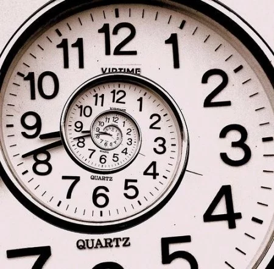

HOME
DICAS
VIDEOS
POSTS POR SEMANA
-1º Administre seu Tempo:Quarta-Freira Dia 18/09
Uma das coisas que mais passam rápido entre as nossas mãos é o tempo, que por maior possa parecer, sempre parece curto demais aos nossos olhos quando vemos alguns momentos passarem depressa.
Nesse sentido, muita gente considera extremamente importante nunca desperdiçar nem um segundo a mais de sua vida: Trabalhando o gerenciamento de seu tempo, seja no trabalho ou na vida pessoal, muitas pessoas conseguem aproveitar mais cada momento de suas rotinas e aprendem a administrar todo o tempo que existe em uma boa organização.
Pensando em administração de tempo, considerando que todos queremos desfrutar melhor de nossos momentos, aprenda algumas dicas sobre como gerenciar melhor a sua rotina e entenda como alguns tipos de planejamento podem fazer a diferença no seu dia a dia.
-2º Os números provam a necessidade por equilíbrio:Quarta-Freira Dia 25/09
Uma pesquisa da consultoria Robert Half realizada em 12 países, aponta que os brasileiros são os profissionais mais estressados do mundo. A principal causa desse estresse é o excesso de trabalho. A sugestão dada pelos entrevistados para minimizar esse problema, é o trabalho em equipe, pois isso significa dividir as tarefas com um número maior de pessoas. Diante disso, é possível perceber que as pessoas não conseguem se organizar adequadamente e isso gera estresse. Além disso, o excesso de trabalho é uma das principais reclamações dos profissionais brasileiros, por isso gastamos maior tempo e energia dedicados às atividades profissionais. No geral vemos pessoas sem tempo para questões pessoais, como para realizar um curso não relacionado ao cargo que ocupa, manter um hobby, praticar esporte, viajar, reunir com os amigos ou realizar refeições em família. Mas, é claro, que tudo que fazemos na vida tem consequência. Principalmente as ações que fazem mal à nossa saúde mental e física. Confira os principais pontos de impacto dos excessos a partir de agora

-3º Administre seu Tempo:Quatra-Freira Dia 02/10
É importante saber dividir muito bem o tempo dedicado ao trabalho e o tempo direcionado ao lazer.
Sem distrações, cumpra suas obrigações diárias com total dedicação, para não perder seus prazos:
só com esse tipo de atenção redobrada você conseguirá vencer a falta de tempo e poderá se divertir sem atrapalhar seus deveres e tarefas da rotina.
Busque organizar seus afazeres e deixar tudo pronto para o dia, sem carregar nada pra depois.
É essencial realizar suas tarefas no dia certo, sem atrasar o trabalho ou seus estudos e compromissos.